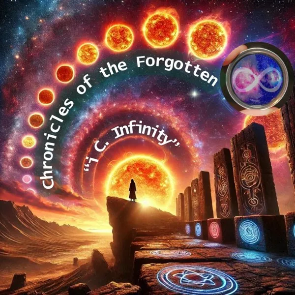

Chronicles of the Forgotten
A larger mythic and social arc: ignored voices, broken systems, ancestral echoes, technology, hope, deception, and repair.

A larger mythic and social arc: ignored voices, broken systems, ancestral echoes, technology, hope, deception, and repair.
